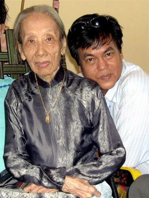

Phụ Lục 5

uá trình đi học:
- Học hết bậc tiểu học trường Tiểu học Đà Nẵng.
- Học một năm Trung học Đồng Khánh - Huế.
- Chuyển vào học năm 2è Année (Đệ nhị niên) trường Áo Tím (Collège Des Jeunnes Filles Indigènes) - Sài Gòn.
Quá trình đi dạy:
- Dạy Pháp văn các trường Trung học Tân Thịnh, Đạt Đức, Les Lauriers ở Sài Gòn (1950 - 1954).
- Làm Hiệu trưởng, Liên hiệu trưởng các trường Tiểu học Bình dân Học hội ở Nghĩa Kỳ - Quảng Ngãi.
Quá trình hoạt động Văn học - Báo chí:
- Chủ bút Tuần báo Tân Thời (1935).
- Phụ trách mục Gỡ Rối Tơ Lòng trên nhật báo Sàigòn Mới.
- Phụ trách mục Tâm Tình Cởi Mở trên nhật báo Tiếng Vang (1962 - 1972).
- Thư ký tòa soạn tuần báo Phụ Nữ Diễn Đàn.
- Đã cộng tác với các tuần báo Văn Nghệ Tiền Phong, Phụ Nữ Ngày Mai.
- Đã viết tiểu thuyết (feuilleton) cho các báo ở Sài Gòn từ năm 1954 - 1972.
- Đã có trên sáu mươi đầu sách được xuất bản từ năm 1956 đến 1972.
- Sau 1975 đã tái bản và in mới trên mười cuốn sách.
(Hiện nay tác phẩm của Bà tùng Long đã bị thất lạc trên năm mươi phần trăm).

Bà Tùng Long và nhà văn Nguyễn Đông Thức (con trai bà Tùng Long)
Ý niệm của nhà văn Bà Tùng Long:
“Tôi vừa viết tiểu thuyết cho báo, vừa dạy con học, vừa thảo thực đơn cho con gái đi chợ. Viết văn đối với tôi đã trở thành chuyên nghiệp chớ không phải viết theo cảm hứng”.
“Tôi ngồi đâu cũng viết được và viết bất cứ lúc nào, khi có nhu cầu... Tôi thích viết loại bút Bic mực màu đen, viết trên giấy báo đã in một mặt”.
“Tôi viết văn để nuôi con. Khi các con tôi những đứa lớn trưởng thành, dìu dắt được các em chúng, bấy giờ tôi sẽ nghỉ viết”.
“Tôi làm báo chẳng những không bị gia đình rẻ rúng, mà còn được cha tôi khuyến khích và chồng tôi dìu dắt. Tôi tự xét mình, thấy trong hai mươi năm làm báo, tôi chưa hề ‘nói láo ăn tiền’...”
Gặp gỡ Bà Tùng Long: “Viết là niềm vui lớn nhất đời tôi”
Nhà văn nữ Bà Tùng Long đã nổi tiếng là cây bút có biệt tài về tiểu thuyết tình cảm, tâm lý của bạn gái, với hàm ý giáo dục đạo đức các thành viên trong gia tộc vươn lên nếp sống lý tưởng, thanh cao, hướng thiện, để lành mạnh xã hội đang manh nha suy thoái thời bấy giờ.
Với số kiến thức căn bản, đa dạng, Bà Tùng Long có thể viết lối văn mà giới phê bình văn nghệ mệnh danh là “văn bác học”. Nhưng bà chỉ thể hiện một văn phong bình dị dễ hòa nhập vào giới bình dân ít học, trình độ hiểu biết còn hạn hẹp, cho họ cảm nhận được, nâng cao kiến thức anh chị em trong giới lao động.
Có thể so sánh nhà văn nữ Bà Tùng Long với nhà văn nữ Quỳnh Giao của Đài Loan là những nhà văn nữ đi vào lĩnh vực tâm lý của giới thanh niên nam nữ bình dân đương thời. Nhưng ở Sài Gòn, Bà Tùng Long đã bước sớm hơn Quỳnh Giao một thập niên.
Nhà văn nữ Bà Tùng Long tên thật là Lê thị Bạch Vân, sinh ngày 1-8-1915 tại Đà Nẵng, quê nội ở thị xã Hội An. Khi cha về Hội An khai sinh cho con, nhân viên hộ tịch ghi ngày 21-4-1915. Sở dĩ có sự ghi sai ngày sinh của bà như vậy vì bấy giờ Đà Nẵng (tức Touranne) là thuộc địa của thực dân Pháp, nên thân phụ của bà không muốn con mình là dân xứ thuộc địa, mới về Hội An, quê nội, làm giấy khai sinh cho con. Còn ngày tháng trong khai sinh ghi lộn xộn là vì lý do chính trị: Thân sinh của bà lúc đầu làm việc trong một công ty tư của ngoại quốc, có tham gia phong trào Duy Tân do nhà các mạng Phan Thành Tài (cha của Phan Bá Lân và Phan Thuyết, sau này là giáo sư các trường Trung học tư thục Chấn Thanh và Đạt Đức) dẫn đầu. Thân phụ bà làm liên lạc viên cho phong trào. Khi phong trào tan vỡ, ông Phan Thành Tài bị thực dân Pháp bắt đưa lên đoạn đầu đài, và một số khác bị đày Côn Đảo.
Trước hiểm họa ấy, thân mẫu bà lánh về Hội An ẩn náu với mẹ chồng. Bấy giờ bà nội của bà cũng đã già yếu. Vì chữ hiếu, buộc lòng thân phụ bà phải thi vào sở Douanes (Thương chánh - nay gọi là Hải quan). Đó là lý do cô bé Lê thị Bạch Vân khai sinh ở Hội An và ghi lệch ngày chào đời ở Đà Nẵng.
Vừa rồi, ngày 1 tháng 8, các con của bà có tổ chức buổi tiệc họp mặt mừng mẹ tám mươi tuổi, ngày đó đúng là sinh nhật của bà.
Thời gian thân phụ và làm việc tại Sở Thương chánh Đà Nẵng, bà theo học hết bậc Tiểu học tại đây, rồi ra Huế học trường Trung học Đồng Khánh.
Năm 1932, thân phụ bà đổi vào Sở Douanes Sài Gòn thì bà học những năm cuối ban Trung học tại Collège Des Jeunes Filles Indigène (Nữ trung học Bản xứ), vì nữ sinh mặc đồng phục áo dài màu tím, cho nên người Sài Gòn quen gọi là trường Áo Tím. (Sau đổi lại là trường Gia Long, mãi cho đến sau ngày miền Nam giải phóng, trường đổi tên Trung học phổ thông Nguyễn thị Minh Khai cho đến nay).
Bà đã viết cho Trang Phụ Nữ của báo Sài Thành (sau đổi tên là Sàigòn Mới) hồi còn ngồi ghế nhà trường. Ngoài bút danh Bà Tùng Long, bà còn ký Lê thị Bạch Vân.
Riêng bút danh “Bà Tùng Long” bà đã ký trong mục Gỡ Rối Tơ Lòng cho nhật báo Sàigòn Mới, mục Tâm Tình Cởi Mở cho nhật báo Tiếng Vang, và trên bốn mươi đầu sách đã xuất bản, với mười mấy truyện dài đăng báo chưa in ra sách.
Nhà văn Bà Tùng Long đã đi vào văn đàn Việt Nam với sự ưu ái của độc giả nhiều lứa tuổi thời bấy giờ.
Năm 1935, Bà Tùng Long kết hôn với nhà báo Hồng Tiêu Nguyễn Đức Huy tại Sài Gòn. Nhà báo Hồng Tiêu là người Quảng Ngãi, chủ bút nhật báo Sài Thành bấy giờ, chuyên trách mục Tranh Xã Hội (Film du Jour), đả phá thói hư tật xấu xã hội đương thời, dưới bút danh Như Hoa.
Bấy giờ Bà Tùng Long thuê manchette (bảng hiệu) tờ báo Tân Thời, chuyên về vấn đề phụ nữ, vì lúc ấy báo Phụ Nữ Tân Văn đã đình bản. Khi biết bà chủ trương tờ Tân Thời, một số bạn bè cũ ở trường Gia Long, trường Pétrus Ký (Sài Gòn), trường Pellerin (Huế), đã góp sức cổ động cho báo. Nhờ báo Tân Thời chủ trương đề cập những vấn đề thiết thân của chị em trong giới phê bình dân, báo được nhiều độc giả ủng hộ. Bà lại qui tụ được nhiều bạn học cũ cộng tác. Người ở xa thì gởi bài về, những người ở quanh vùng Sài Gòn, Gia Định thì đến làm việc luôn tại tòa soạn. Những cây viết ấy phần đông tên tuổi còn xa lạ với độc giả, và cũng mới chân ướt chân ráo bước vào làng báo như bà. Nhưng về sau, sau năm 1952 bà ở Quảng Ngãi về lại Sài Gòn, thì bút danh Tùng Long của bà đã được “cầu chứng” trong làng văn làng báo; như Nguyễn Trọng Trí đã nổi danh là nhà thơ Hàn Mặc Tử đang dưỡng bệnh ở Qui Hòa; Nguyễn Đức Nhuận cũng là nhà thơ đã được ghi tên trong quyển Thi Nhân Hiện Đại của Hoài Thanh, Hoài Chân (Nguyễn Đức Nhuận này không phải Bút Trà Nguyễn Đức Nhuận, anh chồng Bà Tùng Long); và một người là Nam Quốc Cang, đã trở thành người hùng, hy sinh trong cuộc biểu tình chống Pháp của phong trào Trần văn Ơn.
Nhắc đến nhà báo Nam Quốc Cang, bà nhớ kỷ niệm khi Nam Quốc Cang giữ mục Chuyện Hằng Tuần trên tờ tuần báo Tân Thời, nhà báo này viết; “Người Việt Nam chúng tôi chỉ có bốn quyền Tư do, đó là Tự do cờ bạc, Tự do rượu chè, Tự do hút sách và Tự do đĩ điếm”.
Thế là trong một buổi họp báo tại dinh Thống đốc Nam Kỳ (Thống đốc bấy giờ là ông Khrautemer), họ cho đọc bài ấy giữa cuộc họp báo, bấy giờ gồm có các ông Nguyễn Phan Long chủ nhiệm báo Việt Nam, Nguyễn văn Sâm chủ nhiệm báo Đuốc Nhà Nam, Bút Trà chủ nhiệm báo Sài Thành, và bà Thụy An, vợ của Băng Dương, chủ nhiệm báo Đàn Bà. Vì tác giả Nam Quốc Cang vắng mặt, nên Bà Tùng Long đã lãnh đủ những lời chỉ trích ác liệt, nào là tác giả có tư tưởng đen tối, công kích chính phủ Pháp... Và viên Thống đốc không quên kèm theo lời đe dọa, làm mọi người đều quay lại mỉm cười nhìn bà - chẳng biết mỉa mai hay thương hại - chắc họ nghĩ là bà mới bước vào làng báo, chưa biết sự lợi hại và nguy hiểm của lưỡi kéo kiểm duyệt!
Sau đó, người chủ cho thuê bảng hiệu báo, thấy báo bán chạy liền tìm cách lấy báo lại, mặc dù chưa hết giao kèo. Bấy giờ (1936) bà đang ốm nghén, và trong giao kèo thuê báo còn lỏng lẻo, lại nữa chủ báo cũng là người bên nhà chồng, nên bà bỏ luôn tờ báo, về nhà cụ thân sinh (đang ở Sài Gòn) để nghỉ ngơi chuẩn bị sinh con. Bà sinh con gái đầu lòng xong, sau đó vẫn đi dạy trường Tôn Thọ Tường và chỉ còn viết cho trang Phụ Nữ của nhật báo Sài Thành. Rồi năm 1994, Sài Gòn bị máy bay phe Đồng Minh thả bom, thân sinh của bà đổi xuống Sở Douanes tỉnh Trà Vinh; ông bà Bút Trà về Tân An tránh bom. Bà cũng bế con theo chồng về quê Quảng Ngãi.
Đúng ra, nguyên quán anh em ông Hồng Tiêu ở tỉnh Quảng Nam, nhưng cụ nội xưa kia làm quan ở Bình Thuận. Khi đau nặng, gia nhân đưa về ngang Quảng Ngãi thì mãn phần tại đây. Cụ bà (là cô của tiến sĩ Phạm Liệu, một trong Ngũ Phụng Tề Phi xứ Quảng) là mẹ của thân sinh anh em ông Bút Trà - Hồng Tiêu sau này, ở lại nơi chôn ông cụ để cư tang đái hiếu. Và rồi nơi đây trở thành quê hương thứ hai của tộc họ Nguyễn Đức...
Khi về Quảng Ngãi, tỉnh lỵ cũng bị bom quân đồng minh, vợ chồng bà lại chạy lên vùng Mỹ Thắng, Nghĩa Kỳ, nơi có thắng cảnh Thạch Bích Tà Dương, mỗi chiều về nắng chiếu vào vách núi tạo nên một vẻ đẹp kỳ ảo, là một trong những thắng tích của tỉnh Quảng Ngãi. Vì ở gần núi nên đêm về gió lùa lạnh thấu xương.
Rồi Cách Mạng tháng 8 bùng lên, bà kẹt luôn ở đấy. Bà xin mở trường Tiểu học lấy tên là Tân Dân, dạy những người lớn tuổi thất học, ban ngày làm việc đồng áng, tối về lớp học. Trong số đó có cán bộ hành chánh, đoàn thể đến học thêm ngoài giờ làm việc. Bà giúp một số anh chị em thi vào trường Trung học Bình dân Chợ Chùa tỉnh Quảng Ngãi.
Sau này, có vài người học trò cũ ở trường Tân Dân thuở ấy, đã là cán bộ cao cấp, nhân dịp vào Sài Gòn, đã tìm đến thăm bà. Gặp số học trò cũ, gợi bà nhớ lại những kỷ niệm thời chín năm kháng chiến chống Pháp...
Bấy giờ là thời điểm Ủy ban Hành chánh tỉnh Quảng Ngãi chủ trương tiêu thổ kháng chiến, lớp học ban ngày còn nhờ ánh sáng mặt trời, đến lớp đêm dạy anh chị em cán bộ, phải đốt đèn dầu mù u, mỗi lần lên lớp là phải có hai người học trò cầm đèn mù u đứng hai bên cho bà giảng bài. Bà không có sách để dạy môn Toán (Arithmétique) và Hình học (Géométrie), nên phải tự soạn chương trình và soạn những bài giảng Việt văn theo trí nhớ để dạy học (sau này gọi là giáo án).
Dạy học trong hoàn cảnh thiếu thốn như vậy được bốn năm (từ 1945 đến 1949), bà cũng đào tạo nhiều người được đưa vào trường Trung học Bình dân (Chợ Chùa - Quảng Ngãi), giúp anh chị em cán bộ trước kia thiếu điều kiện cắp sách đến trường, nay có thể tự học để nâng lên trình độ Trung học. Sau đó, Ty Giáo dục địa phương thấy bà dạy có hiệu quả, mời làm Liên hiệu trưởng coi thêm các trường học quanh vùng Nghĩa Kỳ.
Đến năm 1952, vì tình trạng khó khăn chung trong vùng kháng chiến, gia đình bà thiếu ăn, các con và đói chỉ vì lương tháng dạy học của bà vừa mua đủ hai mươi ngày gạo, cho dù bà lãnh thêu cờ, khăn, bao gối để kiếm thêm cũng không đủ tiền nuôi con. Giới chức địa phương thông cảm hoàn cảnh bà, chấp thuận cho bà dẫn con về vùng tạm chiến. Khi đó con trai út của bà, nay là nhà văn Nguyễn Đông Thức mới tám tháng tuổi. Bấy giờ bà vào Sài Gòn với các con, ông Hồng Tiêu ở lại.
Vào Sài Gòn, Bà Tùng Long vừa dạy học vừa viết báo để nuôi con. Bà nhận dạy Pháp văn cho các trường trung học Tân Thịnh, Đạt Đức, Les Lauriers... đồng thời viết truyện dài từng ngày (feuilleton) cho các nhật báo xuất bản ở Sài Gòn. Sau 1954, bà viết thêm cho các báo Đồng Nai, Tiếng Vang, Tiếng Chuông, và các tuần báo Văn Nghệ Tiền Phong, Phụ Nữ Diễn Đàn, Phụ Nữ Mới, Phụ Nữ Ngày Mai, Duy Tân, Đông Phương... Và bà chuyên trách mục Gỡ Rối Tơ Lòng trên báo Sàigòn Mới, và mục Tâm Tình Cởi Mở cho báo Tiếng Vang. Đặc biệt hai mục này bà có rất nhiều độc giả, nhất là độc giả trẻ rất ái mộ.
Thời ấy, những truyện dài của bà vừa kết thúc trên báo đã có nhà xuất bản thương lượng mua bản quyền để in sách. Từ năm 1956 đến 1958, bà đã cho xuất bản trên hai mươi đầu sách, rồi từ 1963 đến 1972 bà tiếp tục cho xuất bản trên hai mươi đầu sách nữa. Những đầu sách chúng tôi tra cứu được in kèm dưới đây vẫn còn thiếu. Vì sau 1975 sách báo thất lạc rất nhiều. Mấy năm gần đây bà cũng có cho tái bản mấy cuốn: Đời Con Gái, Hứa Hẹn, Tỉnh Giấc Tình Si, Tìm Về Bến Thương, Mười Hai Bến Nước... nhưng bà không được hài lòng vì nhà xuất bản in giấy xấu quá, thiếu thẩm mỹ.
Bà Tùng Long gác bút từ năm 1972, như bà đã trả lời cuộc phỏng vấn của ký giả Trần Quân báo Time năm 1961: “Tôi viết văn để nuôi con. Khi nào các con tôi đứa lớn trưởng thành dìu dắt được đàn em nó, bấy giờ tôi sẽ nghỉ viết”.
Cho nên đến khi người con gái lớn của bà đỗ cử nhân Khoa học (hiện đang công tác tại Công ty Dệt Phong Phú) và mấy người con trai của bà cũng đỗ đạt, thành danh trong và ngoài nước, đã là giáo sư, luật sư... là bà toại nguyện.
Và bà cũng “gác bút quy ẩn” từ dạo đó...
Tôi đã xin Bà Tùng Long một cái hẹn từ mấy ngày trước, hôm tôi đến tư thất của bà ở đường Đinh Bộ Lĩnh, quận Bình Thạnh, được bà tiếp thân mật ở phòng khách nơi đặt bộ salon đơn sơ, bày trước tủ thờ, bên trên có di ảnh nhà báo tiền bối Hồng Tiêu chồng bà, đã quá cố năm 1985.
Bà khoan thai trong bộ quần áo bà ba trang nhã, tuy tuổi đã bát tuần nhưng thoạt trông ngỡ như mới ngoài sáu mươi, vì tóc chỉ điểm sương, nét trán chưa nhăn, âm hưởng giọng nói vẫn thanh tao, và điều đặc biệt là trí nhớ của bà vẫn còn sắc sảo thể hiện qua những câu trả lời rất gọn gàng mạch lạc trong cuộc mạn đàm với tôi sau đây...
Trong lúc hàn huyên giao đãi, tôi hỏi thăm về nhà thơ lão thành cũng là nhà báo kỳ cựu Hồng Tiêu. Bà Tùng Long nhân lúc vui chuyện, đọc cho tôi nghe hai câu đối của nhà thơ Lam Giang tặng vợ chồng bà:
BẠCH VÂN thiên thượng cô phi ảnh
Dao vọng HỒNG TIÊU luyến ái thê
(Xin lược dịch nôm na:
Mây trắng trời xanh bay lẻ bóng,
Sáo ngọc vang xa nhớ vợ hiền)
Sau đó, tôi mời bà Tùng Long cùng vào cuộc trao đổi về tâm sự của bà:
- Thưa bà, vào thời điểm 1936, người phụ nữ Việt Nam đều có xu hướng làm vợ làm mẹ, và phần đông đều mơ ước được làm dâu trong gia đình tư sản, để về sau làm chủ gia sản lớn, sống trong nhung lụa. Với học lực và dung mạo trên trung bình, bà dễ dàng bước vào ngưỡng cửa giới thượng lưu. Sao bà lại thích theo nghề viết văn làm báo?
Bà Tùng Long:
- Tôi viết văn là chịu ảnh hưởng của cha từ khi tôi còn nhỏ. Thuở ấy, cha tôi cộng tác với các báo Hữu Thanh, Nam Phong, tôi đọc các tạp chí ấy khi còn học tiểu học ở Đà Nẵng. Và lên trung học, tôi được đọc thêm sách của Tự Lực Văn Đoàn, Tiểu Thuyết Thứ Bảy, mộng viết văn của tôi ấp ủ từ đó.
Còn tôi làm báo thì do chồng tôi khuyến khích. Đó là khi cha tôi đổi vào Sài Gòn, tôi theo học trường trung học Áo Tím, chồng tôi bấy giờ chỉ là nhà báo Hồng Tiêu, bạn vong niên của cha tôi, cùng hoạt động trong Hội Trung Ái Hữu, đang là chủ bút nhật báo Sài Thành, thường tới nhà bàn thảo công việc với cha tôi và hay gợi ý cho tôi viết báo, rồi giao tôi phụ trách Trang Phụ Nữ của báo Sài Thành, lẽ dĩ nhiên là được cha cho phép và khuyến khích. Và sau đó cũng cha tôi tác hợp hôn nhân cho chúng tôi.
- Thưa bà, thời bấy giờ đang trong xã hội phong kiến, mọi người còn quan niệm rằng “Làm báo nói láo ăn tiền” cho nên những ai lăn lóc vào nghề này dễ bị gia đình khinh rẻ. Chẳng hay trường hợp của bà có ngoại lệ không?
- Tôi làm báo chẳng những không bị gia đình rẻ rúng mà còn được cha tôi khuyến khích, chồng tôi hướng dẫn. Và tôi xét thấy suốt hai mươi năm làm báo, tôi chưa hề “nói láo ăn tiền” bao giờ. Mặc dù viết văn để nuôi con, nhưng tôi không chiều theo vài ông chủ báo để viết theo thị hiếu xấu của một số độc giả của báo nào đó. Mà tôi chỉ viết theo lương tâm, mục đích xây dựng luân lý và trau dồi đạo đức con người. Vì tôi quan niệm mình phải làm như vậy thì các con của mình sau này mới nên người tốt và có ích cho xã hội.
- Thưa bà, bà thường viết vào lúc nào trong ngày? Viết luôn vào máy đánh chữ hay viết tay? Bà có thói quen gì trong khi viết?
- Tôi thường viết bằng bút Bic mực màu đen, viết trên giấy báo đã in một mặt. Tôi thường ghé tòa soạn mỗi sáng, vào thẳng nhà in lấy tờ ruột đã in trang 2 và 3, để coi lại feuilleton của mình đã đến đâu. Nếu hôm nào người ấn loát trưởng (chef typo) cho biết bài của tôi đã hết, phải đưa thêm, tôi liền ngồi vào bàn tại phòng sắp chữ, viết nối theo đoạn tiểu thuyết hôm trước, đưa liền để thợ kịp sắp chữ, lên khuôn.
- Thưa bà, còn khi viết ở nhà?
- Sau bữa cơm tối, tôi viết từ mười chín giờ đến khoảng hai mươi giờ cho những đoạn tiếp theo đoạn trước, và trả lời thư của mục Gỡ Rối Tơ Lòng để kịp đưa cho các báo sáng hôm sau. Cũng có hôm, báo nào nhờ viết truyện ngắn chẳng hạn, thì tôi cũng viết liền một mạch - sau khi xong các bài nói trên - đến hai, ba giờ sáng cho xong. Đôi lúc vì quá mệt, tôi phải xếp lại để tối hôm sau mới hoàn tất...
- Thưa bà, những lúc đang viết mà mất hứng, bà gợi hứng như thế nào để viết tiếp?
- Vấn đề gợi hứng để viết tiếp ít khi xảy ra với tôi. Bởi vì, nếu viết tại nhà thì tôi vừa dạy mấy đứa con nhỏ học, vừa thảo thực đơn cho đứa lớn đi chợ, vừa viết văn... thì đâu có thể viết theo cảm hứng được! Viết văn đối với tôi bấy giờ đã trở thành chuyên nghiệp rồi.
- Trong hoàn cảnh bận rộn như vậy mà bà viết tiểu thuyết cho nhiều báo một lúc, có khi nào nhân vật truyện này nhảy qua truyện kia không?
- Tôi luôn lập sẵn dàn bài, tóm lược cốt truyện, phân chương và ghi chi tiết từng chương, định hình nhân vật... cho mỗi truyện. Trước khi viết tiếp cho báo nào, tôi luôn xem lại dàn bài này, nhờ vậy không bao giờ lẫn lộn cốt truyện, hoặc nhân vật truyện này qua truyện nọ. Nói cho đúng, tôi nhờ nghề viết văn mà lần hồi nuôi được chín đứa con, đứa nào cũng vào đại học.
- Bà viết nhiều tiểu thuyết đồng loạt cho các tờ báo, đề tài và chất liệu bà lấy ở đâu mà phong phú quá vậy?
- Tôi được hưởng di sản phong phú về trí nhớ và tâm hồn văn thơ của cha tôi. Bắt nguồn từ căn bản đó, đến những ngày học ở Huế, rồi những ngày theo cha đến những nhiệm sở như Tam Quan (Bình Định), nơi có rừng dừa bạt ngàn, non xanh nước biếc phong cảnh rất nên thơ; và nơi có sự sinh hoạt xô bồ náo nhiệt ngày đêm như ở Sài Gòn. Rồi với những điều mắt thấy tai nghe, tôi còn chắt lọc thêm qua những câu chuyện tâm tình của bạn đọc. Khi viết báo, tôi lại chắt lọc qua tâm sự của học sinh trong các lớp học. Và qua mục Gỡ Rối Tơ Lòng với mục Tâm Tình Cởi Mở, đó là hai nguồn cung ứng tài nguyên cho đề tài và chất liệu trong các tác phẩm của tôi.
- Thưa bà, chúng tôi xin vô phép được hỏi, thuở sinh thời ông nhà có góp sức trong sinh kế gia đình? Và có giúp đỡ bà trong việc viết lách phần nào không?
- Có nhiều lắm chớ! Nhưng nhà tôi say mê hoạt động chánh trị, lợi nhuận của nhà tôi ở lĩnh vực khác. Riêng trong việc viết lách của tôi, khi nào tôi viết mà gặp những danh từ Hán văn, hoặc những điển tích, thì nhà tôi giảng cho. Thuở nhỏ tôi đã được ông nội dạy học chữ Hán, sau này nhà tôi có dạy nhưng tôi bận quá nên không học. Có thể nói cho vui là vợ chồng chúng tôi ví như hai quyển sách tự điển của nhau, chẳng hạn khi tôi cần vấn đề gì về Hán văn hoặc về điển tích thì có nhà tôi, cũng như khi nhà tôi cần gì về địa danh trên thế giới thì tôi đáp ứng. Nhà tôi còn muốn dạy tôi làm thơ Đường luật và các thể loại thơ khác, nhưng tôi không học, chớ không thích làm thơ, tôi tự biết mình không có năng khiếu ở lĩnh vực ấy.
- Bấy giờ bà làm việc nhiều như vậy còn thì giờ đâu mà giải trí? Xin bà cho biết những thú vui của bà?
- Thú thật, tôi ít có thời gian dành cho những cuộc đi giải trí bên ngoài. Ban ngày thì ngoài công việc viết báo, tôi còn dạy Pháp văn và Việt văn cho các trường như tôi đã kể. Tôi còn làm Tổng thư ký Hội phụ nữ Việt Nam (thời Ngô Đình Diệm, lúc bà Bút Trà là Hội trưởng), có chân trong Ban chấp hành Hội bảo vệ luân lý, và tham gia Ban chấp hành các Hội phụ huynh học sinh những trường có con tôi theo học như Võ Trường Toản, Gia Long, Lê văn Duyệt, Pétrus Ký... Bấy giờ, sau những tiết dạy hoặc những buổi họp, tôi phải nhào lên taxi chạy cho kịp giờ, tôi nghĩ cũng gần giống như hiện nay những danh cha chạy show đến các tụ điểm ca nhạc cho kịp giờ hát vậy.
- Trong bữa cơm hằng ngày bà thường ăn những món gì?
- Hồi nhỏ, lúc còn ở Đà Nẵng, mẹ tôi cho ăn món gì thì khi ra đời và cho mãi đến bây giờ tôi vẫn ăn các món đó. Mà cha mẹ tôi ăn uống rất giản dị, căn bản là cá biển nấu ngót theo kiểu Đà Nẵng, cá chiên giầm nước mắm tỏi ớt, ăn với rau luộc, và món ăn thường bữa của chúng tôi là món cá kho mặn.
- Còn những ngày gia đình bà sống ở Sài Gòn, thì các món ăn và giờ giấc những bữa cơm hằng ngày như thế nào?
- Tôi cũng ăn uống theo thói quen của mẹ tôi đã cho tôi ăn thuở nhỏ, cho nên tôi ít ăn cá đồng và các món lạ như ếch, lươn... dù tôi biết là cũng rất ngon. Tôi chỉ ăn ngày ba bữa: Sáng điểm tâm cháo trắng hay là xôi ở nhà nấu, rồi đi dạy học hoặc đến các tòa báo. Trưa và tối ăn hai bữa nữa. Tôi rất ít ăn quà giữa những bữa cơm. Dù có ai biếu món ăn gì, hoặc bánh, trái cây, tôi cũng để dành chờ dọn cho cả nhà ăn sau hai bữa cơm chính.
- Bà có thích ăn những món cổ truyền của Hội An như Cao lâu, và mì Quảng của Đà Nẵng không?
- A, món Cao lâu! Hồi nhỏ, sáng chủ nhật nào tôi cũng đi ăn với cha tôi. Vì bấy giờ bà nội tôi ở Hội An cho nên hễ chiều thứ bảy tan sở là cha con tôi lên thuyền xuôi về Hội An. Ở chơi với bà đến chiều chủ nhật lại theo thuyền trở về Đà Nẵng để sáng thứ hai tôi đi học, cha tôi đi làm. Nhưng hiện nay tôi bị bệnh tim mạch, bác sĩ bắt ăn kiêng các chất béo, nên tôi không dám ăn món Cao lâu và mì Quảng nữa, vì món nào cũng có nhiều mỡ quá.
- Thưa bà, thời gian gần đây bà có đọc tác phẩm của các nhà văn trẻ không? Nếu có, xin bà cho biết cảm tưởng ra sao?
- Ngoài việc dạy học và viết văn, tôi còn hai đam mê nữa, đó là đan len và đọc sách. Hễ rảnh tay là tôi đan, hoặc gặp được cuốn sách nào thích là tôi đọc mải miết cho hết mới chịu buông, nhiều cuốn tôi đọc đến bốn, năm lượt, có cuốn tôi đọc say sưa một lèo đến gần sáng. Vì mê đọc sách, cho nên các bộ kiếm hiệp của Kim Dung tôi đều có đủ, nhưng đâu dám đọc, bởi sợ không dứt được để làm việc khác, mãi sau này nghỉ viết tôi mới đọc hết toàn bộ sách ông ta.
- Còn các nhà văn trẻ hiện nay, thưa bà?
- Gần đây tôi cũng đọc các nhà văn trẻ, tôi nhận thấy các cây bút trẻ bây giờ đã chắt lọc được nhiều khía cạnh của cuộc sống để thể hiện vào tác phẩm, nhờ môi trường rộng và đa dạng. Lại nữa các bạn trẻ còn có điều kiện đi lại nhiều nơi trong nước và ngoài nước, được tiếp cận với muôn mặt của cuộc sống hiện nay, có thể nói đời sống của các bạn trẻ hôm nay phong phú hơn thời chúng tôi trước kia nhiều lắm.
- Bà có thể cho biết vài nhà văn trẻ được bà ưa thích qua tác phẩm?
- Nếu chỉ nói thích đơn thuần, thì tôi thích đọc nhiều cây bút trẻ. Như về thơ, tôi thích thơ Đỗ Trung Quân, Từ Kế Tường và Nguyễn Duy. Nhà thơ Nguyễn Duy khi đi Thụy Điển về, có bài thơ nói về các thiếu nữ nước ấy tắm nắng. Lời thơ dí dỏm có nhiều tứ mới, nhẹ nhàng mà súc tích, dễ cảm nhận. Cũng như những cây bút hàm tiếu trong báo Mực Tím viết rất dí dỏm, tươi tắn và khá hồn nhiên.
Còn văn thì tôi thích đọc tác phẩm của những cây bút đang lên như Nguyễn Nhật Ánh, Lý Lan, Nguyễn thị Minh Ngọc... Văn phong các bạn trẻ ấy gãy gọn, sử dụng những câu ngắn nhưng sống động với nhiều hình ảnh, rất hóm hỉnh đầy chất trẻ. Riêng về tác phẩm của Nguyễn Nhật Ánh, tôi liên tưởng đến nhà văn André Lichtenberger của Pháp...
- Thưa bà, các con của bà, ngoài nhà văn nhà báo Nguyễn Đông Thức, có còn anh chị nào nối nghiệp của ông nhà và bà không?
- Tôi còn một người con trai, anh của Đông Thức, đang sống ở ngoại quốc, cũng viết báo. Bây giờ anh nhắc đến Đông Thức, làm tôi nhớ khi nó còn học cấp I, có lần tôi chê nó dốt Việt văn, nó nói: “Bộ má tưởng viết tiểu thuyết khó lắm sao? Theo con, chỉ cần thuộc hai mươi lăm mẫu tự là viết được”. Tôi buồn cười và nghĩ nó còn nhỏ mà đã nói lớn lối như vậy, có lẽ sau này nó sẽ viết văn. Mà về sau quả đúng như vậy. Sau khi Đông Thức đi thanh niên xung phong về, nói với tôi là con sẽ làm báo Tuổi Trẻ và viết văn. Tôi hỏi sao con không chọn nghề khác, chớ mẹ thấy sống với nghề cầm viết làm sao nuôi nổi vợ con. Đông Thức trả lới với tôi là: “Con theo nghề báo của Thầy, nghề văn của Mẹ, sau này sướng thì nhờ, cực thì con cũng ráng chịu!”.
- Rồi bà trả lời sao, thưa bà?
- Tôi nghe con nói vậy, chỉ biết im lặng vì xúc động và làm thinh luôn chớ còn biết nói gì nữa?
- Thưa bà, nhà báo Hồng Tiêu cũng là nhà thơ Đường luật kỳ cựu, chẳng hay các con của ông bà có người nào nối nghiệp thơ, hay chỉ viết văn làm báo như Nguyễn Đông Thức thôi?
Bà Tùng Long bảo tôi hãy đợi một chút, rồi bà đi vào phòng trong đem ra một tập vở có nhiều bài thơ chép tay, đưa tôi xem và trả lời câu hỏi của tôi lúc nãy:
- Chị em chúng nó cũng có làm rất nhiều thơ theo thể Đường luật để biểu cảm về tình yêu thương cha mẹ. Trong tập thơ này là bài thơ chị em nó làm trong những dịp chúc thọ tôi.
Tôi đón tập thơ chép tay, đọc lướt qua nhiều bài thơ của các con bà cảm tác để chúc tụng mẹ trong ngày sinh nhật. Tôi chú ý đến bài thơ Lòng con của Nguyễn Đức Thông (Đông Thức) làm theo thể thất ngôn tứ cú, vào dịp lễ sinh nhật của Mẹ ngày 1-8-1962, khi ấy Đông Thức mới 11 tuổi:
LÒNG CON
Từ lâu ơn Mẹ quá cao dày
Viết báo, làm văn suốt tháng ngày
Nuôi đám con thơ ăn học đủ
Mong con khỏi khổ lúc sau này
Ước gì con có đủ quyền uy
Nắm được thời gian chớ vội đi
Để Mẹ chúng con còn trẻ mãi
Nhưng rồi ước vọng lai tan đi
Mái tóc đen nay đã bạc màu
Đôi môi tươi thắm có còn đâu!
Làn da trắng mịn giờ thay thế
Bằng một làn da kém ửng đào.
Con muốn đem ngay mái tóc đen
Cùng dòng máu nóng của con tim
Thay vào tóc trắng, đôi môi héo
Và nếp da nhăn của Mẹ hiền.
Long Nhi - Nguyễn Đức Thông
- Thưa bà, bà đã ký bút danh Bạch Vân cũng đẹp, vì sao bà lại ký Bà Tùng Long và dùng mãi đến bây giờ?
Bà Tùng Long cười:
- Các vị nho học của chúng ta có câu: “Vân Tùng Long, Phong Tùng Hổ”, nghĩa là mây theo rồng, gió theo cọp, cho nên thuở xưa, người nào lấy biệt danh Tùng Hổ thì biết người ấy tên là Phong. Tôi tên Vân cho nên lấy bút danh Tùng Long. Và khi ký bút danh này, tôi thấy không trùng với ai, cho nên tôi dùng luôn đến nay.
- Thưa bà, nếu vậy hai từ Tùng Long cũng đủ, sao bà còn thêm từ Bà phía trước?
Bà Tùng Long lại cười:
- Vì ký bút danh Tùng Long, tôi sợ độc giả hiểu lầm tôi là đàn ông, nên tôi thêm chữ Bà vào để phân biệt. Lúc đầu tôi nghĩ là dùng tạm một thời gian, nhưng về sau tôi thấy cũng nhiều người dùng từ Bà trước bút danh, chẳng hạn như Bà Đạm Phương. Hồi còn trẻ, bà Đạm Phương thường dùng danh từ Đạm Phương nữ sĩ, và bà Tương Phố cũng dùng bút danh Tương Phố nữ sĩ.
Hồi ấy cũng có một bà Đông y sĩ xưng danh là nữ sĩ Phan thị Bạch Vân, đồng thời các vị mày râu khi viết bài về phái nữ, cũng ký Huỳnh Hoa nữ sĩ, Ngọc Lan nữ sĩ... Riêng tôi, không dám tự hào là nữ sĩ, nên tôi không ký Tùng Long nữ sĩ.
Hơn nữa, trong thời gian tôi còn dạy học ở Quảng Ngãi và khi vào Sài Gòn, tôi có viết bài để dạy học mà bây giờ gọi là giáo án, hoặc dịch vài bài thơ Pháp đăng báo, tôi cũng thường ký bút danh Bà Tùng Long, chủ đích để cho độc giả khỏi lầm tôi là đàn ông, đồng thời tôi cũng nghĩ rằng mình chỉ là nhà giáo dục, chớ không phải nhà văn. Chẳng hạn như bà Stael và bà Maintenon bên Pháp, lúc nào cũng ký bài báo và những cuốn sách của mình viết về các vấn đề giáo dục các thiếu nữ, là Madame Stael, Madame Maintenon. Rồi về sau trong văn học sử Pháp cũng ghi bút danh của các bà ấy với từ Madame đứng trước bút hiệu.
Còn tôi, trong các mục Gỡ Rối và Giải Đáp, tôi ký Bà Tùng Long là để gần gũi với phái nữ. Vả lại, như vậy các nữ độc giả sẽ tin cậy và dễ bộc lộ tâm tình hơn là chỉ ký Tùng Long, họ có thể nghĩ lầm tôi là phái nam thì họ sẽ ngần ngại khi muốn bộc lộ tâm tình. Chỉ đơn giản có vậy thôi.
- Thưa bà... Yêu văn chương từ thuở nhỏ, lẽ nào và đã thật sự gác bút?
- Cảm ơn anh đã rất hiểu tôi. Thật sự thì hiện nay hàng ngày tôi vẫn viết, khi thì những đoạn hồi ký bất, khi lại là những cảm xúc bất chợt trước những sự việc xảy đến hàng ngày, những con người vừa gặp gỡ... Cũng có khi đó là một đoạn văn tôi viết về một người bạn, một đứa cháu... Viết là niềm vui lớn nhất đời tôi.
Tác phẩm của Bà Tùng Long đã xuất bản:
1. LẦU TỈNH MỘNG, tiểu thuyết, NXB Huỳnh Văn, 1956
2. TÌNH DUYÊN, tiểu thuyết, NXB Tấn Phát, 1956
3. NGÀY MAI TƯƠI SÁNG, truyện nhi đồng, NXB Sống Mới, 1957
4. ÁI TÌNH VÀ DANH DỰ, tiểu thuyết, NXB Bình Minh, 1957
5. CHÚA TIỀN CHÚA BẠC, tiểu thuyết, NXB Huỳnh Văn, 1957
6. CÒN VƯƠNG TƠ LÒNG, tiểu thuyết, NXB Tấn Phát, 1957
7. GIANG SAN NHÀ CHỒNG, tiểu thuyết, NXB Bình Minh, 1957
8. HAI TRẺ ĐÁNH GIÀY, Truyện nhi đồng, NXB Sống Mới, 1957
9. HOA TỈ MUỘI, tiểu thuyết, NXB Tấn Phát, 1957
10. MẸ CHỒNG NÀNG DÂU, tiểu thuyết, NXB Rạng Đông, 1957
11. NHỊ LAN, tiểu thuyết, NXB Rạng Đông, 1957
12. MỘT NGƯỜI CHỊ, truyện nhi đồng, NXB Sống Mới, 1957
13. TẤM LÒNG BÁC ÁI, truyện nhi đồng, NXB Đồng Nai, 1957
14. VỢ LỚN VỢ BÉ, tiểu thuyết, NXB Tấn Phát, 1957
15. TÌNH VẠN DẶM, tiểu thuyết, NXB Rạng Đông, 1958
16. TÌNH VÀ NGHĨA, tiểu thuyết, NXB Rạng Đông, 1958
17. VỢ HIỀN, tiểu thuyết, NXB Rạng Đông, 1958
18. TRÊN ĐỒI THÔNG, tiểu thuyết, NXB Hương Nam, 1963
19. CON ĐƯỜNG HẠNH PHÚC, tiểu thuyết, NXB Thế Kỷ, 1963
20. GIÒNG ĐỜI, tiểu thuyết, NXB Tia Sáng, 1966
21. AI LÀ MẸ, tiểu thuyết, NXB Trung Thành, 1967
22. BÊN SUỐI CHI LAN, tiểu thuyết, NXB Thế Kỷ, 1967
23. BIỆT THỰ MỸ KHANH, tiểu thuyết, NXB Trung Thành, 1967
24. CHỌN ĐÁ THỬ VÀNG, tiểu thuyết, NXB Trung Thành, 1967
25. DUYÊN LÀNH, tiểu thuyết, NXB Đẹp, 1967
26. GIỮA CƠN SÓNG GIÓ, tiểu thuyết, NXB Kim Lệ, 1967
27. MỘT BÓNG NGƯỜI, tiểu thuyết, NXB Trung Thành, 1967
28. NHỮNG PHÚT CHIA LY, tập truyện ngắn, NXB Thiên Tứ, 1967
29. TÌNH CÂM, tiểu thuyết, NXB Hồng Hưng, 1967
30. TỜ DI CHÚC, tiểu thuyết, NXB Trung Thành, 1967
31. CON ĐƯỜNG MỘT CHIỀU, tiểu thuyết, NXB Trung Thành, 1969
32. NGƯỜI XƯA ĐÃ VỀ, tiểu thuyết, NXB Thế Kỷ, 1972...
Những sách tái bản và in mới sau năm 1975:
33. BÓNG NGƯỜI XƯA, tiểu thuyết (tái bản), NXB Văn Nghệ TP.HCM, 1989
34. MỘT LẦN LẦM LỠ, tiểu thuyết, NXB Tiền Giang, 1989
35. MƯỜI HAI BẾN NƯỚC, tiểu thuyết, NXB Sông Bé, 1989
36. ĐƯỜNG TƠ ĐỨT NỐI, tiểu thuyết, NXB Tiền Giang, 1990
37. TỈNH GIẤC TÌNH SI, tiểu thuyết, NXB Tiền Giang, 1990
38. CHỈ MỘT LẦN YÊU, tiểu thuyết, NXB Tiền Giang, 1990
39. NẶNG GÁNH ÂN TÌNH, tiểu thuyết, NXB Tiền Giang, 1990
40. HỨA HẸN, tiểu thuyết, NXB Tiền Giang, 1990
41. NGƯỜI XƯA ĐÃ VỀ, tiểu thuyết (tái bản), NXB Mũi Cà Mau, 1990
42. CON ĐƯỜNG HẠNH PHÚC, tiểu thuyết (tái bản), NXB Kiên Giang, 1990
43. TÌM VỀ BẾN THƯƠNG, tiểu thuyết, NXB Đồng Nai, 1990
44. DUYÊN TÌNH LẠC BẾN, tiểu thuyết, NXB Sông Bé, 1990
45. NẺO VỀ TÌNH YÊU, tiểu thuyết, NXB Bình Định, 1990
46. BÊN SUỐI CHI LAN, tiểu thuyết (tái bản), NXB Nghệ Tĩnh, 1991
47. AI NỠ ÉP DUYÊN, tiểu thuyết, NXB Quảng Ngãi, 1991
48. LẦU TỈNH MỘNG, tiểu thuyết, NXB Quảng Ngãi, 1991
49. MẸ CHỒNG NÀNG DÂU, tiểu thuyết (tái bản), NXB Quảng Ngãi, 1991
50. ĐỜI CON GÁI, tiểu thuyết, NXB Quảng Ngãi, 1991
Lê Phương Chi
HẾT